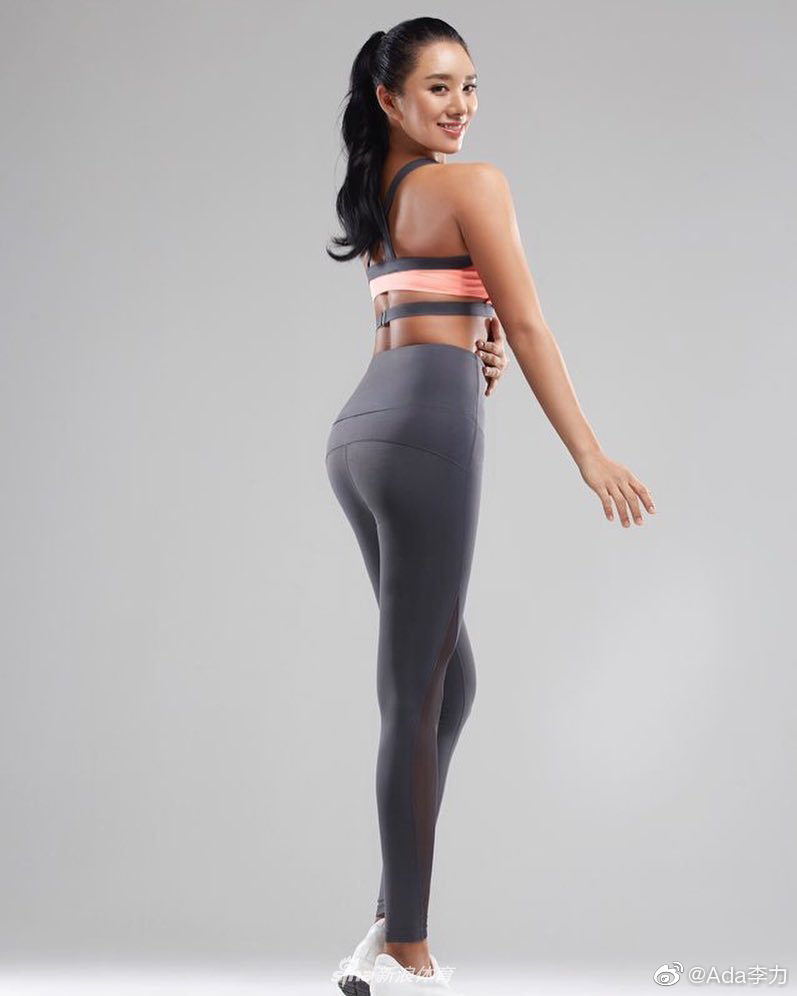

#创业#
聊健身话题时，放了张网上找来的，我觉得好看的细腰翘臀照片，东方人面孔，有人回复：这种照片都是P的，我每周跑三次步，臀部也仅仅是紧致而已。
换做以往，我会直接就让她多去学习了解下健身知识了。但最近我立了个flag：面对具体的人说什么，判断条件是能说出让对方开心的话。如果知道这话说出去，对方会不高兴，那自己一定要管住嘴。
这年头，慈悲比刻薄可难多了，我以前以为毒舌是智商的象征，那属于蠢而不自知。现在明白我自己既然不习惯听别人的刻薄话，自己也就不要对别人说。另外就是这个原则打底：假话一句不说，真话不必全说。
我想了想后才回复：这种臀部需要通过举铁这类抗阻训练，加上饮食调整才能获得。有长跑习惯的人体型都偏瘦长，很少见到这么丰满的臀部。你的运动习惯真好，我很羡慕。
多年刻薄习惯改掉也不容易，从一件件事情做起来呗。
聊健身话题时，放了张网上找来的，我觉得好看的细腰翘臀照片，东方人面孔，有人回复：这种照片都是P的，我每周跑三次步，臀部也仅仅是紧致而已。
换做以往，我会直接就让她多去学习了解下健身知识了。但最近我立了个flag：面对具体的人说什么，判断条件是能说出让对方开心的话。如果知道这话说出去，对方会不高兴，那自己一定要管住嘴。
这年头，慈悲比刻薄可难多了，我以前以为毒舌是智商的象征，那属于蠢而不自知。现在明白我自己既然不习惯听别人的刻薄话，自己也就不要对别人说。另外就是这个原则打底：假话一句不说，真话不必全说。
我想了想后才回复：这种臀部需要通过举铁这类抗阻训练，加上饮食调整才能获得。有长跑习惯的人体型都偏瘦长，很少见到这么丰满的臀部。你的运动习惯真好，我很羡慕。
多年刻薄习惯改掉也不容易，从一件件事情做起来呗。
- 